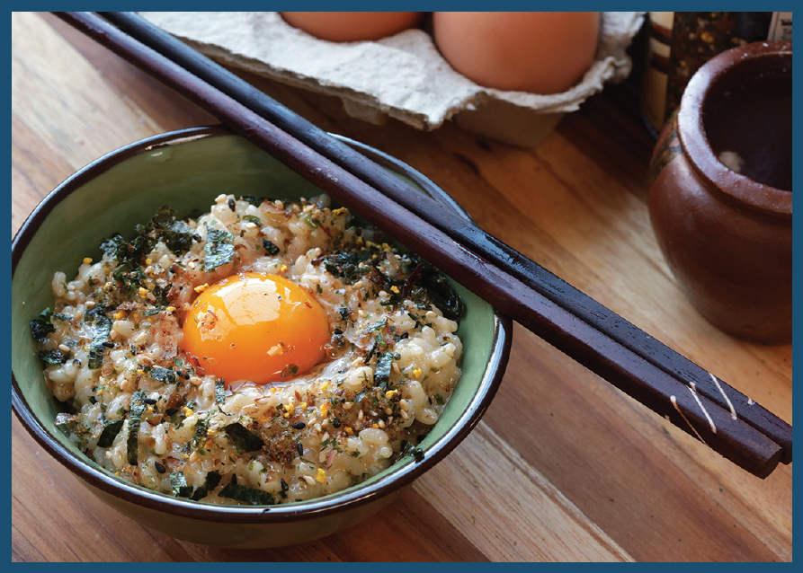
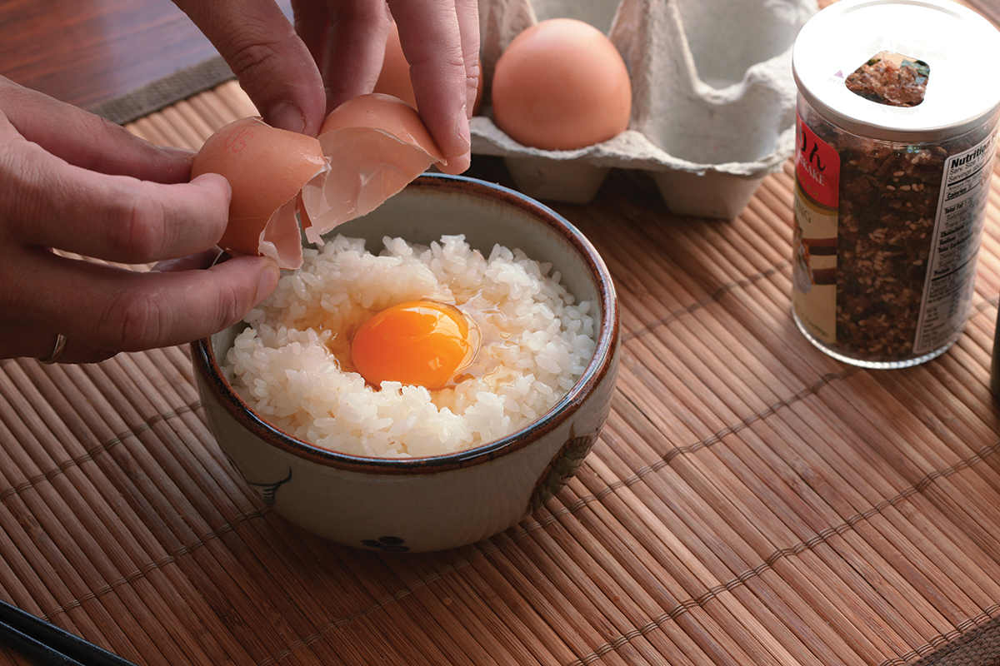
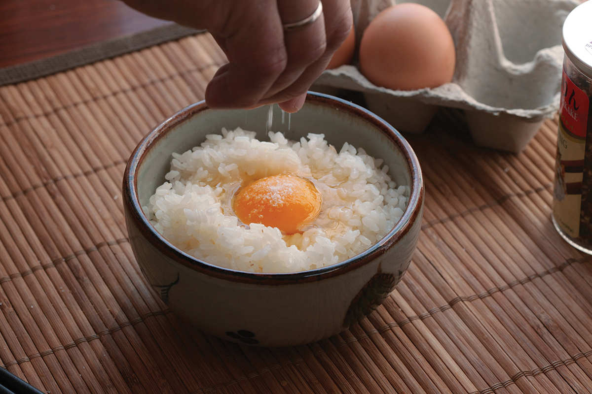
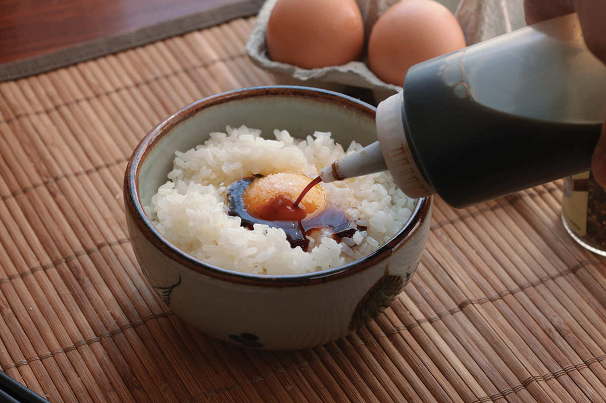
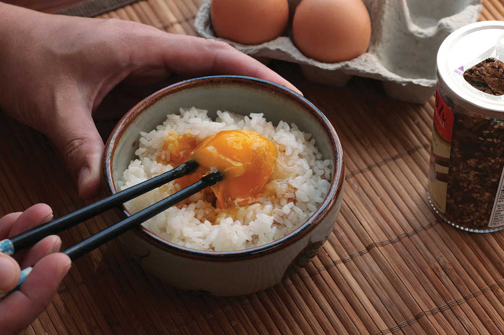
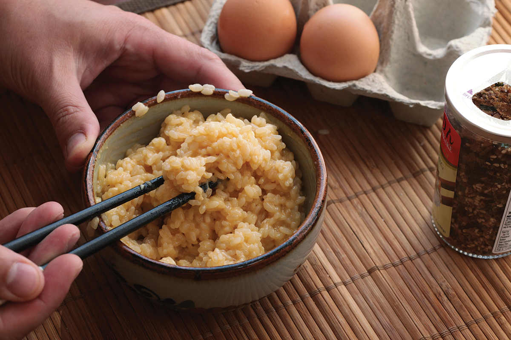

TAMAGO-KAKE GOHAN

“I want egg and rice and soy sauce” is what my daughter, Alicia, says to me every morning when I ask her what she wants for breakfast. It used to be pancakes. Now it’s tamago-kake gohan.
Other than maybe pouring milk over cereal, tamago-kake gohan (“Tah-MAH-go KAH-keh GOH-hahn,” literally “egg-covered rice”), was the very first recipe I learned, and it’s Japanese comfort food at its simplest. When I was growing up in New York, my Japanese grandparents lived in the apartment one floor below us. On weekends, my mom would occasionally shoo us off to spend the night downstairs. My sisters and I would sleep on a thick futon rolled out on the floor, drinking barley tea and Calpis, a Japanese yogurt-flavored soft drink. In the morning, we’d head into my grandmother’s sitting room for more tea and tamago-kake gohan.
We’d each get a bowl of hot rice (or, in my older sister’s case, room-temperature rice, which she preferred) and an egg to break into it. Then we’d season it with a little bit of soy sauce, a pinch of salt, and a shake of Aji-No-Moto, a Japanese brand of pure powdered MSG. We’d whip up the rice with a pair of chopsticks, the egg turning pale yellow and foamy, holding the rice in a light, frothy suspension somewhere between a custard and a meringue. The Japanese have a thing for this kind of slippery, tender texture. If we were feeling extra bold, we’d top it up with a bit of shredded dried nori or a shake of furikake, the mixed seasoning that’s typically eaten on plain rice but works particularly well here.
It’s been a staple meal for me my entire life (and it mildly grossed out my wife the first time she saw me eat it). It’s something hearty and delicious to throw together in minutes for breakfast or a late-night snack—I’ll microwave leftover rice to get it hot again for tamago-kake gohan. It’s such a simple, common food for me that it wasn’t until I posted a picture of it on Instagram (where it quickly became my most liked post) that I realized that tamago-kake gohan, or—as the kids are calling it these days—“TKG,” is now a thing. It’s been primped and primed and is ready for the spotlight. I would frankly not be surprised if food trucks selling eggy rice already exist in Austin or if fancy chefs in Brooklyn are serving bowls of seasoned rice topped with sous-vide eggs.
Tamago-kake gohan, your time has come.
The good news is, you don’t really need to go anywhere to get it. It’s a two-minute recipe (three, tops, if you’re real slow), and you probably already have most of the ingredients you need to make it. Start with a bowl of rice—about a cup of cooked rice per egg is right. So long as it’s not stale, it can be cold, lukewarm, hot, or anywhere in between. If you’ve got leftover rice in the fridge, put some in a bowl, cover it with a saucer, and microwave it for a minute, and it’ll be good to go. I keep those little plastic trays of shelf-stable, precooked, microwave-ready rice in my pantry specifically for tamago-kake gohan (you can find them at most Asian markets near the dry rice).
Next, you need an egg. You do want to use a good, clean egg and break it cleanly, as you’re going to be eating it raw. If you are squeamish about such things, buy pasteurized eggs (or pasteurize them yourself, using a sous-vide circulator at 135°F for 2 hours), or gently coddle your eggs in simmering water for a couple of minutes before adding them. Coddled eggs won’t have quite the same lightness after they’re added to the rice, but you’ll get the general effect.





Some people like to be fussy, perhaps separating the egg and mixing the white into the rice before folding in the yolk. Others will whip together the soy sauce and the egg before stirring it into the rice. I’ve tried all these techniques, and honestly, I can find absolutely no reason to use them when the easiest method works just as well: Dump the egg into the rice, season it, and stir.
My grandmother always used extremely simple seasonings. Some people like to add a dash of dashi (or, more frequently, some granules of Hondashi), which can give it an appealingly savory and smoky flavor. Some people drizzle in mirin for sweetness. I generally don’t bother, although, when I’ve got some on hand, I’ve been known to use bottled, concentrated soba noodle tsuyu, which contains all of those ingredients in a conveniently premixed form.
The real trick is in the beating. You need to beat thoroughly, and you need to beat vigorously. It’ll take a little effort to get all the clumps out of the rice, but you want to continue beating even after that’s happened. Just like creaming butter and sugar for a cookie dough, as you beat the rice and egg mixture, it will incorporate more and more air. Meanwhile, egg proteins will also stretch and tangle, giving the dish more cohesion. By the time you’re done, the mixture should flow and settle very, very slowly in the bowl—just slightly thicker than an Italian-style risotto, but far lighter.
It’s ready to eat as is, but if you want to get extra fancy with it, do what I like to do: Top it off with an extra egg yolk. Your grandmother isn’t here to stop you right now.